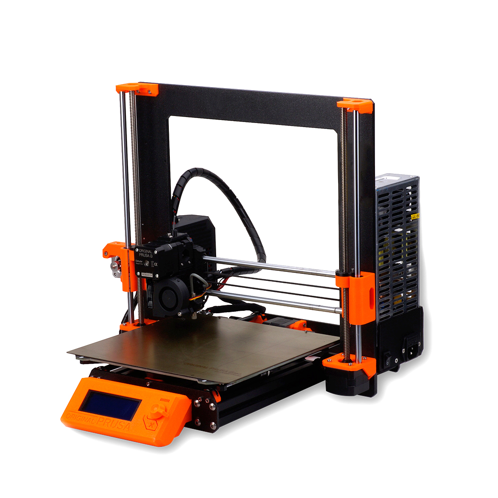

Prusa i3 mk3s
The prusa i3 mk3s has a beautiful balance between ease of use and functionality. It's an efficient and accurate machine that allows for intuitive use. It has a moderate build volume and is fit for almost any print job.
Spec Summary
The following table sums up the specifications relevant for the use of the prusa mk3s in our workspace.
| Build volume | 250 x 210 x 210 mm |
| Layer height | 0.05 - 0.35mm |
| Filament diameter | 1.75mm |
| Print technology | Fused filament fabrication |
| Printhead | Single extruder with super silent fan |
| XY resolution | 0.01mm microstep |
| Required Access | Basic toolsquare access |
Useful Resources
User Manual
This manual contains all the necessary information to start working with the laser in our makerspace.